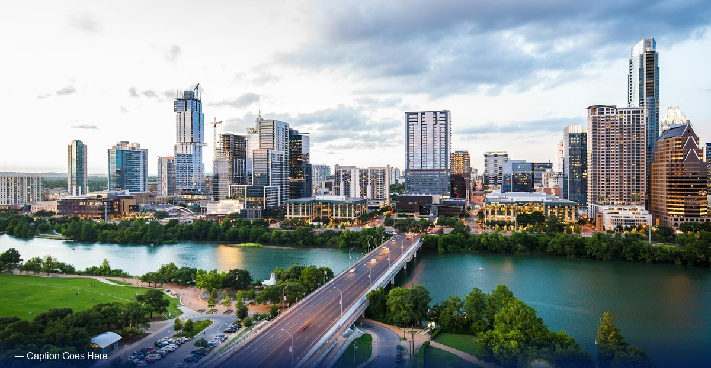

Engineering Water Conveyance
Brooklyn — Water conveyance engineering is a vital process that ensures the efficient movement of water from one location to another. This involves the design and construction of systems such as pipelines, canals, and aqueducts that transport water for various uses, including irrigation, drinking, and industrial applications. Engineers meticulously plan these systems to optimize flow rates, minimize losses, and ensure sustainability.
In the realm of water conveyance, innovative techniques are employed to inspire confidence in the infrastructure we rely on. These systems are designed to withstand environmental challenges while providing reliable access to water resources.
The process of water conveyance engineering encompasses a range of activities, from surveying potential routes to selecting appropriate materials for construction. Each project is unique, requiring careful consideration of the local geography and climate to ensure that water is delivered efficiently and safely.

Understanding Water Management and Sustainability:
Stay abreast of the latest findings and trends in water management through our articles, which are supported by engineering studies and empirical data. Our content transcends theory by offering practical applications and strategies that professionals can utilize for effective water resource management.
- The Engineering Principles of Water Systems.
- Learn about common challenges in water conveyance, including leakage, pressure loss.
- Examine water management within various contexts, such as urban infrastructure, agricultural systems, etc.
Examine water management within various contexts, such as urban water supply, agricultural irrigation, and water conservation in vulnerable communities. Understand the unique challenges and potential solutions in each scenario.
Explore the fascinating world of water conveyance engineering, where innovative techniques and technologies come together to transport water efficiently across various terrains. From designing intricate aqueducts to implementing modern pipeline systems, this field plays a crucial role in ensuring that communities have access to clean and reliable water sources.
Engineering Water Conveyance
Water conveyance engineering is a vital process that ensures the efficient movement of water from one location to another. This involves the design and construction of systems such as pipelines, canals, and aqueducts that transport water for various uses, including irrigation, drinking, and industrial applications. Engineers meticulously plan these systems to optimize flow rates, minimize losses, and ensure sustainability.
CDM Smith is a privately owned engineering and construction firm providing legendary client service and smart solutions in water, environment, transportation, energy, and facilities. Passionate about our work and invested in each other, we are inspired to think and driven to solve the world’s environmental and infrastructure challenges.